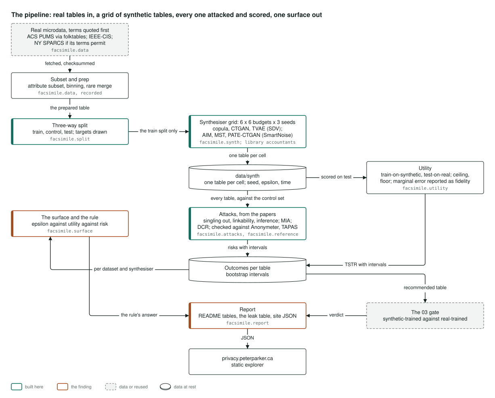
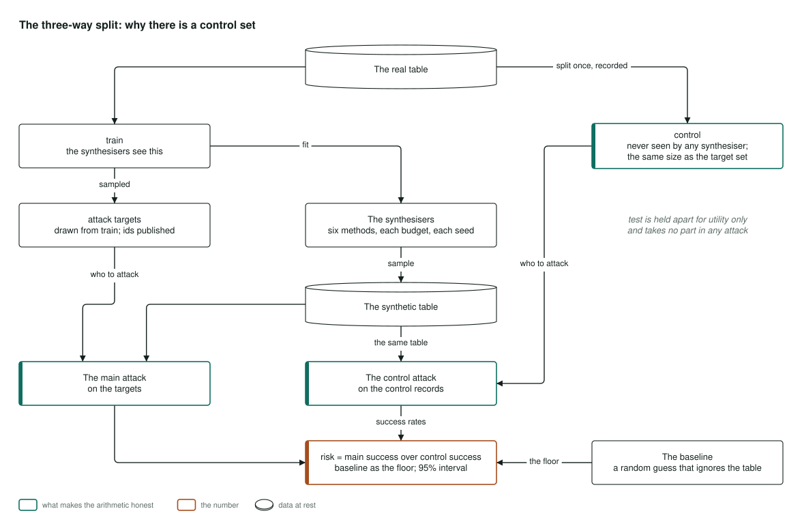
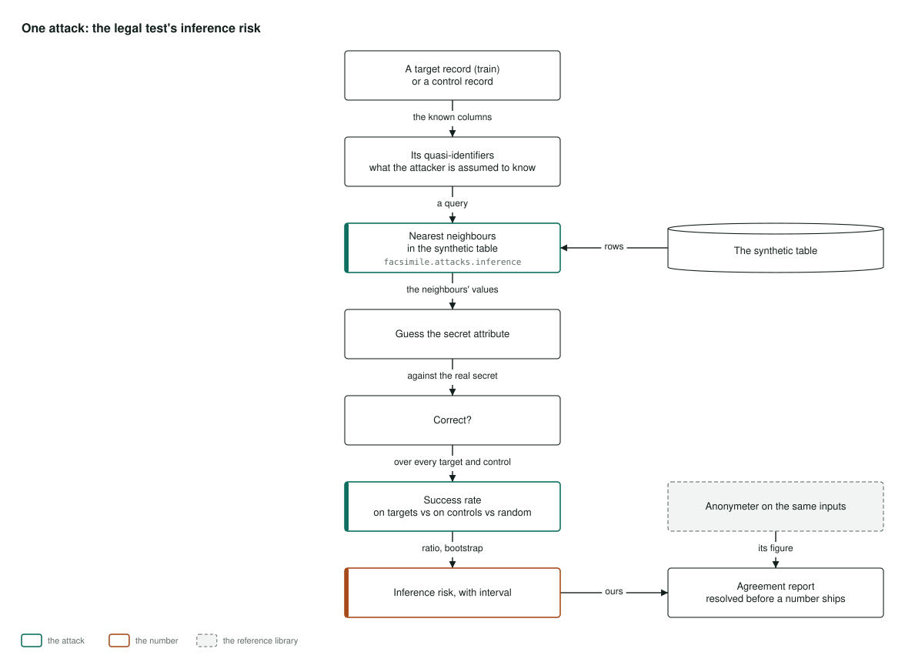
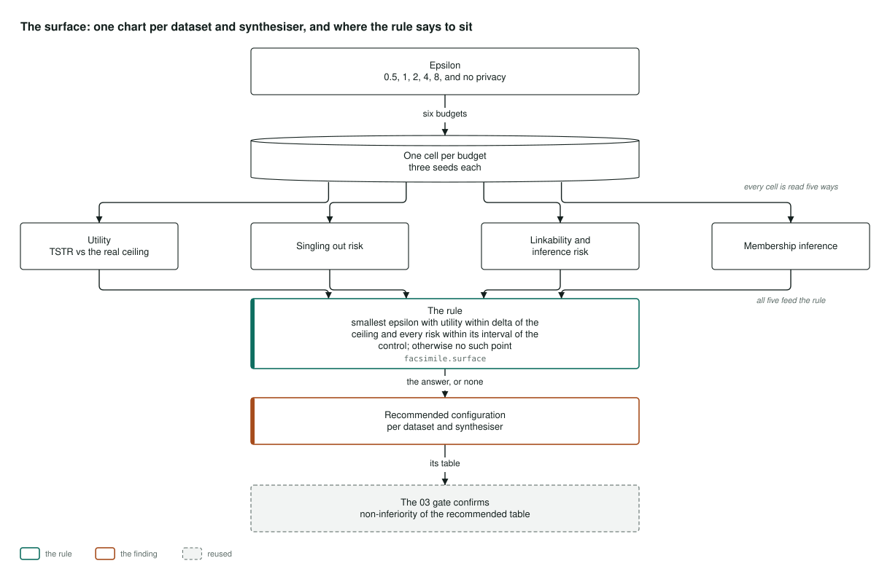

Architecture
How it's built
How synthetic data is generated, attacked and scored here, in four pictures. They were drawn before the first line of code, so that the design could not be shaped to fit the result. Select a diagram to open it full size.
The pipeline

Three real datasets come in, each with its terms read and quoted before the first download: California census responses, card transactions from a public fraud competition, and New York hospital discharges. Each is reduced to sixteen or seventeen attributes and coded the same way, with numeric columns in fixed bins and rare categories merged. The coding spends no privacy budget, because it is read from public bounds and from the test split, never from the people the guarantee protects.
Each dataset is split once, and seven synthesisers each make a table at every budget, three seeds apiece. The Gaussian copula, CTGAN and TVAE come from SDV and the diffusion model TabDDPM from synthcity, and none of them carries a guarantee. AIM, MST and PATE-CTGAN come from SmartNoise, with every epsilon taken from the library's own accountant. The project never adds noise of its own.
Every table is attacked and scored. The attacks are singling out, linkability and inference, each implemented from the paper that defines the legal test, plus membership inference and distance to closest record. Each is run beside the reference library on the same tables. The score is a model trained on the synthetic table and tested on real records. A rule fixed in advance reads the results, and one command writes the README tables, the leak table and the data behind this site.
Where it lives: facsimile.data, facsimile.prep, facsimile.synth, facsimile.attacks, facsimile.utility, facsimile.surface, facsimile.gate and facsimile.report.
The three-way split

This is the idea the whole measurement rests on. The synthesisers see only the training split. From it, 2,000 attack targets are drawn, and 2,000 control records come from people no synthesiser ever saw. The test split is kept for usefulness and takes no part in any attack.
Every attack runs twice against the same synthetic table, once on the targets and once on the control. Its success on the control is what the table reveals about anyone, which is the table doing its job. Only the excess on the targets is a leak. A random guess that ignores the table is the floor that shows the attack works at all.
Where it lives: facsimile.data.split and facsimile.attacks.risk.
One attack: inference

Every attack has the same shape; only the predicates and the search change. In the inference attack, the attacker knows everything about a person but one attribute, here the income bracket. They find that person's nearest records in the synthetic table and guess the missing attribute from them.
Right or wrong is counted over the targets, over the control and for the random guess. The risk is the targets' excess over the control, as a share of what was left to gain, with a 95% interval. The authors' library, Anonymeter, runs on the same inputs. On all 153 tables and five attacks, 764 of the 765 pairs of intervals overlap.
Where it lives: facsimile.attacks.inference, facsimile.attacks.neighbours and facsimile.attacks.reference.
The surface and the rule

For each dataset and synthesiser, every budget is one cell with three seeds, read for usefulness and for each risk. The rule picks the smallest epsilon where every task is within 0.02 AUC of the model trained on real data and no attack detects a risk, or it says plainly that no such point exists.
It said that everywhere. So the release gate from project 03 was given the nearest configurations instead, under a selection rule written down before it ran. It blocked every one it could decide.
Where it lives: facsimile.surface, facsimile.gate and project 03's gate compare.